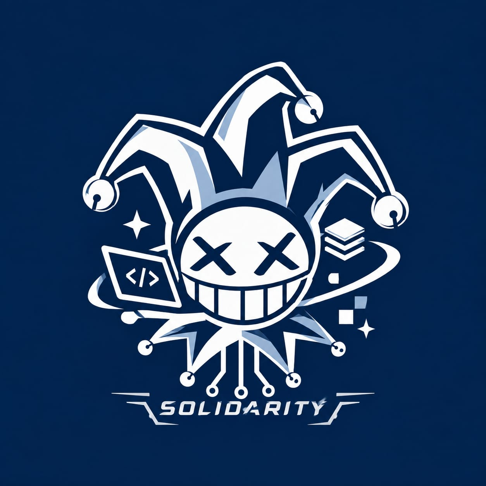

bahasa pemrograman
hobi
klik di mana saja sekali supaya lagu bisa otomatis diputar

SOLIDARITY01 / tentang
SOLIDARITY lahir dari kelas SI26A dibuat pertama kali oleh Faris. Tujuan dibuat lingkaran pertemanan ini adalah untuk mengerjakan tugas bersama, belajar, mengenal satu sama lain, dan membangun potensi diri sebagai mahasiswa Sistem Informasi. Isinya orang-orang dengan cara berpikir berbeda: ada yang rapi, ada yang asal jalan dulu, ada yang jago ngoding.
Di sini kami simpan siapa kami, apa yang kami suka, dan foto-foto yang pantas dikenang. Kami welcome kepada semua orang asalkan orang itu punya value. Kucing di logo itu? Dia senyum karena kodenya akhirnya jalan.
02 / anggota
klik di mana saja sekali supaya lagu bisa otomatis diputar
03 / galeri